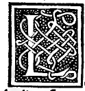

CAPITOLO LI¶
Delo ycocedron piano solido o ver vacuo e delo absciso solido o ver vacuo e delo eleuato solido o ver vacuo.

Lo ycocedron piano solido o ver vacuo contene 3 o linee o ver lati tutti fraloro equali e questo i) in lui causano 60 anguli superficiali e 1 2 solidi. E anco formano in epso,20 basi tutte triangulari equilatere e equiangule e ciascuno de dicti anguli solidi son facti o ver contenuti da 5 anguli superficiali de diete basi triangule che la sua figura similmente materiale lo dimostra.
Lo ycocedron absciso piano solido o ver vacuo ha 90 lati o ver linee e si ha 180 anguli superficiali de li quali 120 sonno de li trianguli ala sua compositione concurrenti e 60 sonno deli pentagoni che pur aquella conuengano quali tutti sonno equilateri. E queste linee formano intorno dicto corpo 32 basi dele quali 20 sonno exagone cioè de 6 lati equali e 12 ne son pentagone cioè de 5 lati equali.
E cadaune ni suo grado sonno fra loro equilatere, e anco equiangule cioè che tutti li exagoni fraloro sonno de anguli equali e cosi li pentagoni fraloro sonno de anguli equali. Ma li lati tutti si de pentagoni commo deli exagoni tutti fraloro sonno equali. Solo in li angoli sonno differenti li pentagoni, eli exagoni. E questo si facto corpi nasci dal precedente reguläre quando ciascun suo lato ne la sua terza parte vniforme se taglino.
Edi tal tagli se causano 20 exagoni e 12 pentagoni commo e ditto e 3o anguli corporei o ver solidi. Ma dele dicti linee 60 ne son commune ali exagoni epentagoni per che de li 20 exagoni insiemi vniformamente gionti de necessita causano 20 pentagoni e de queste ancora non se; pò dare lo eleuato per lo defecto dei dicto exagono commo nel tetracedron absciso e delo octocedron absciso de sopra dicto habiamo.
Lo ycocedron eleuato solido o ver vacuo in se ha 90 linee e ha 180 anguli superficiali e 20 solidi pyramidal! e ha 60 basi o ver superficie che lo circundano tutte triangulari equilatere e anco equiangule. Ma dele 90 linee 3o ne sonno comune a caduna dele superficie dele suoi 20 pyramidi. E fia composto dicto corpo de 20 pyramidi laterate triangulär! equilatere e equiangule de equale altezza e de lo ycocedron integro interiore per sola ymaginatione dal intellecto perceptibile e le sue basi sonno basi similmente de diete 20 pyramidi. Che tutto ancora la propria forma sua materiale fa aperto.